Tether заморозил $917 млн в USDT, вероятно, из-за взлома Binance. @bankrollo
Tether заморозил $917 млн в USDT, вероятно, из-за взлома Binance. @bankrollo
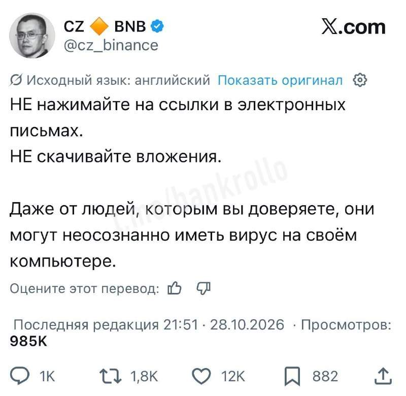
«НЕ нажимайте на ссылки». Основатель Binance CZ ровно сутки назад. @bankrollo
Circle заморозила почти $900 млн в USDС , связанных с возможным взломом Binance. @bankrollo
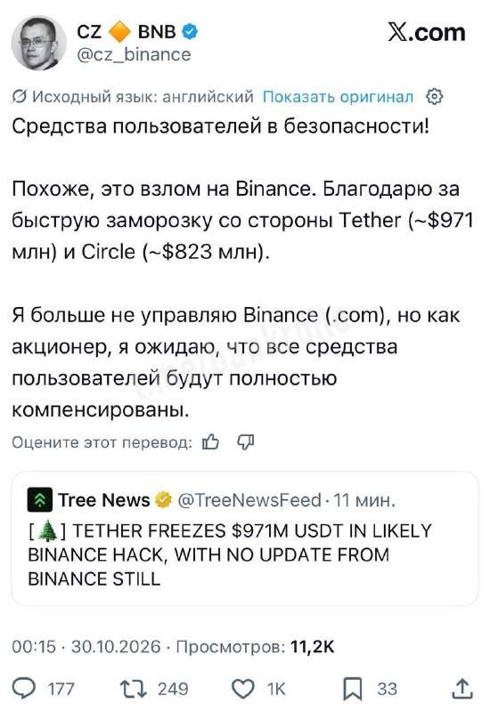
«Похоже, Binance взломали». Основатель Binance CZ подтвердил взлом. @bankrollo
С Binance вывели уже $5,6 млрд. @bankrollo
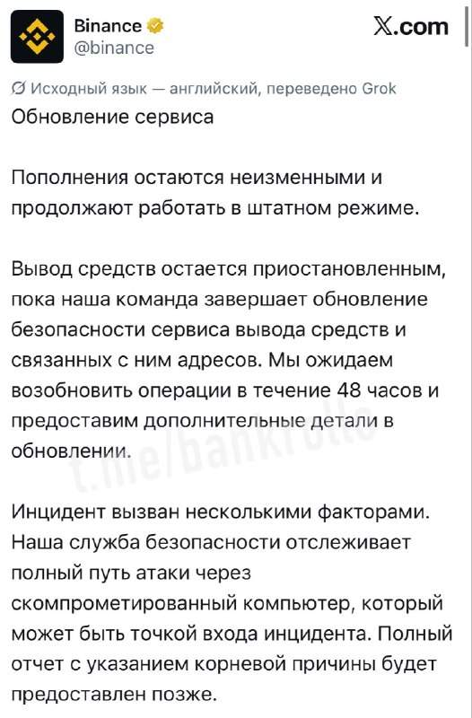
Binance приостановил вывод средств с кошельков. Возобновить его компания планирует в течение 48 часов после проверки. Атака совершалась через взломанный компьютер, считают в Binance. @bankrollo
Украина перестала бить по российским НПЗ после давления со стороны Трампа, пишет WSJ. Неофициальная пауза началась на прошлой неделе. Ожидается, что она продлится до завершения промежуточных выборов в Конгресс США, которые пройдут в начале ноября. @bankrollo
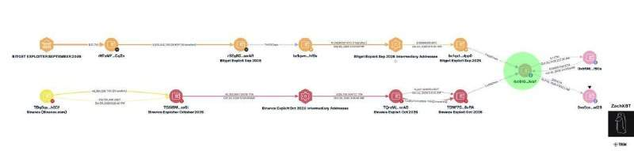
КНДР может стоять за взломом Binance, сообщил криптоаналитик ZachXBT. По его словам, за это может быть ответственна группировка TraiderTraitor, которую связывают с атакой на Bitget. Одним из аргументов стало то, что украденные средства поступили на один и тот же криптоадрес. @bankrollo
Взлом Binance сопоставим со всеми взломами централизованных криптобирж за последние 12 лет. Ущерб оценивается в $6,3 млрд, тогда как за 118 предыдущих атак с 2014 года хакеры похитили около $6,6 млрд. @bankrollo
ФНС тестирует модель для выявления скрытых доходов самозанятых. Скоринговая модель выявляет самозанятых, неправомерно аннулирующих чеки в приложении «Мой налог», пишут Ведомости. За девять месяцев 2026 года к ответственности за такие нарушения привлекли около 3 тысяч человек на сумму 300 млн рублей. Штраф за первое такое нарушение составляет 20% от суммы операции, за повторное — 100%. Одна из причин — стремление не превысить годовой лимит НПД в 2,4 млн рублей, отмечают эксперты. @bankrollo
Выручка Яндекса от рекламы и услуг продвижения бизнес-группы «Поисковых сервисов и ИИ» в III квартале выросла на 9% год к году и оказалась выше общерыночных темпов, которые прогнозировали отраслевые аналитики. Основными факторами роста в компании называют повышение эффективности инструментов, рост отдельных сегментов и развитие рекламных форматов. Выручка в цифровой наружной рекламе (DOOH), на Connected TV и в мессенджерах выросла на 72%, а инвестиции иностранных компаний в продвижение на сервисах Яндекса за девять месяцев увеличились на 62% год к году. @bankrollo
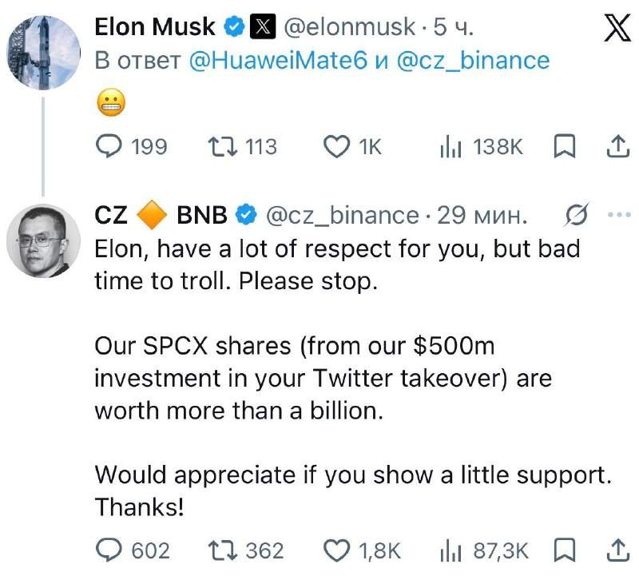
Основатель Binance CZ попросил Маска не троллить платформу после взлома и напомнил об инвестициях в $500 млн в покупку Twitter. По словам Чжао, полученные за эти вложения акции SpaceX теперь стоят более $1 млрд. @bankrollo
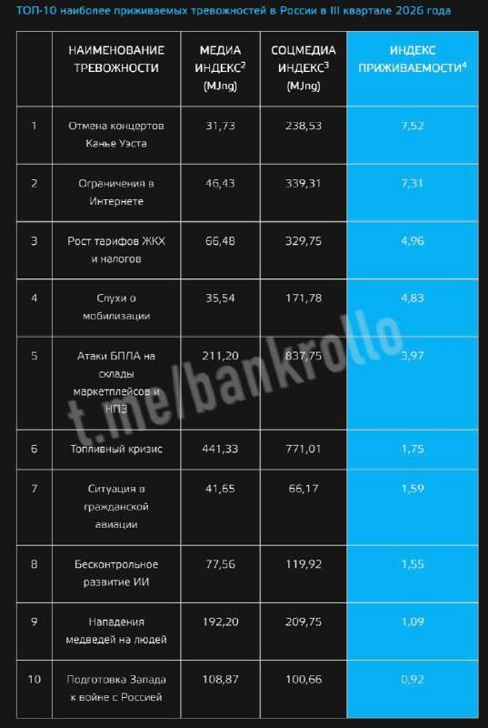
Отмена концертов Канье Уэста волновала россиян больше, чем возможная мобилизация, атаки БПЛА и топливный кризис, показал индекс тревожности КРОС. Эта тема стала самой переживаемой тревожностью россиян с июля по сентябрь. @bankrollo
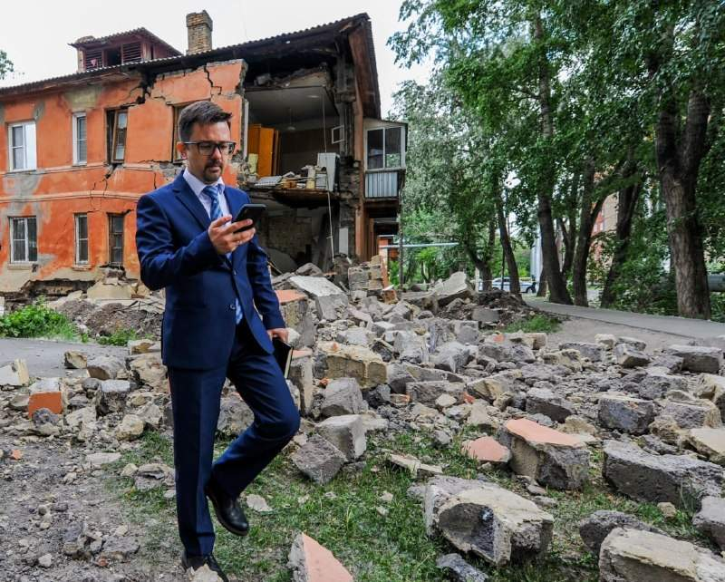
У экс-главы челябинского Фонда капремонта нашли 60 домов, квартир и люксовых авто в Москве и Крыму. Всё имущество Виктора Тихоненко, обвиняемого в получении взятки, на 350 млн рублей изымут в пользу государства, сообщили в прокуратуре. @bankrollo
Claude взломал Linux меньше чем за час. В ядре ОС обнаружили уязвимость, связанную с обработкой TCP-соединения, почти максимального уровня критичности — 9,8 из 10. Если не обновиться, хакеры могут украсть любые данные с вашего компьютера и даже перехватить управление им. @bankrollo
В России массово закрываются частные АЗС. Число их ликвидаций превысило количество новых регистраций впервые с 2022 года, пишет Коммерсантъ. За январь—сентябрь с рынка ушли 935 компаний — на 16,7% больше, чем годом ранее. Это связано с перебоями в поставках топлива, ростом оптовых цен на бензин и дизель, а также увеличением издержек. @bankrollo
Binance пообещала открыть вывод средств через 45 часов. По итогам расследования компания выявила дополнительные точки проникновения. Изначально она предполагала, что причиной могла стать утечка с ноутбука сотрудника, но расследование показало, что атака была… https://t.me/bankrollo/69234 Binance выделила более $6,34 млрд собственных средств, чтобы покрыть последствия взлома, сообщили в компании. @bankrollo
У главы Bugatti угнали его личный Bugatti Chiron прямо из штаб-квартиры. Мате Римац оставил ключи в машине, потому что её часто брали друзья и коллеги. По его словам, сразу после кражи он бросился в погоню на Porsche 911. Менее чем за сутки вор выехал из страны, проехал через Словению и добрался до Австрии, где его поймала полиция. После задержания вор признался, что пришёл искать работу, но увидел ключи в салоне и не смог удержаться. @bankrollo
Данные 27 тысяч американцев, оформивших предзаказ на смартфон Трампа, слили в сеть, пишет The Guardian. Согласно уязвимости, которую обнаружил австралийский программист, в открытом доступе могли оказаться имена, адреса электронной почты, почтовые адреса и… https://t.me/bankrollo/60760 Золотой смартфон Трампа оказался полной копией HTC. Изначально устройство должно было быть полностью изготовлено в США, однако перед релизом надпись пропала. В итоге оказалось, что устройства настолько не отличаются, что там можно поменять платы и ничего не изменится, выяснил техноблогер. @bankrollo
Почему здоровье продаётся лучше спорта и как строить фитнес-бизнес — об этом рассказали Артём Кумпель, старший управляющий директор Авито, основатель Pro Trener Андрей Жуков, предприниматель, телеведущая и блогер Юлия Коваль в новом выпуске подкаста «РЕШЕНО». Замечали, что люди всё чаще занимаются спортом не ради стройной фигуры или рельефных мышц, а чтобы укрепить здоровье? Это важный тренд в индустрии. Ещё из подкаста можно узнать про развитие бизнеса, работу с командой и будущее индустрии. Отдельная тема — выездные спортивные кэмпы: на них приходится половина бизнеса Pro Trener. В подкасте также объяснили, где искать сильных специалистов, как их обучать и удерживать и сколько часов в неделю тренироваться для результата. Подкаст доступен на платформах ВКонтакте , Rutube , Я.Музыка и Дзен .
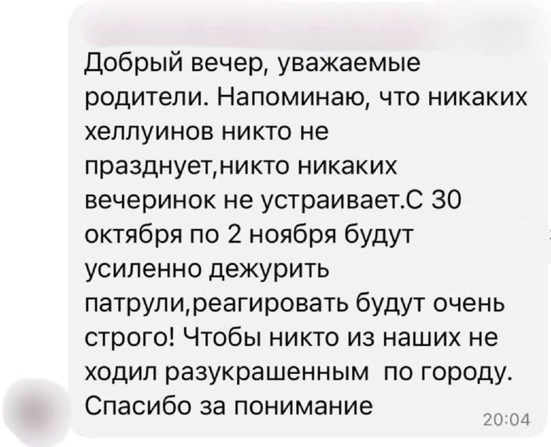
Российским школьникам запрещают праздновать Хеллоуин. В Ейске учителя уже предупредили родителей, что по городу будут ездить патрули и искать «разукрашенных». @bankrollo
Украина возобновила атаки по российским НПЗ спустя две недели, пишут украинские СМИ. По их данным, отказ от ударов был требованием американцев, которые отключали Starlink, но на днях возобновили услугу. @bankrollo https://t.me/bankrollo/69235 Украинские БПЛА сегодня атаковали 3 российских НПЗ и один газохимический комплекс — вице-премьер Новак. @bankrollo
Удары по российским НПЗ не ставят под сомнение предстоящие трёхсторонние переговоры по Украине — Песков. По его словам, Россия вообще не будет поднимать эту тему на переговорах. @bankrollo
Люксовые бутики в Берлине начали закрывать деревянными досками в ожидании новых молодёжных протестов. @bankrollo
Российские криптобиржи будут безопаснее Binance, потому что работают в российском правовом поле, заявили в Госдуме. @bankrollo
Северокорейские грабители Binance выступили с обращением к миру. @bankrollo
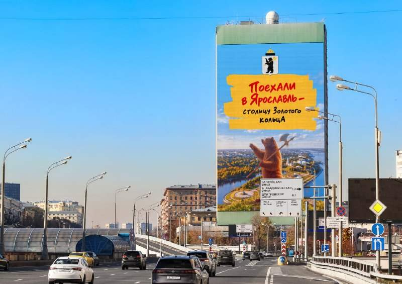
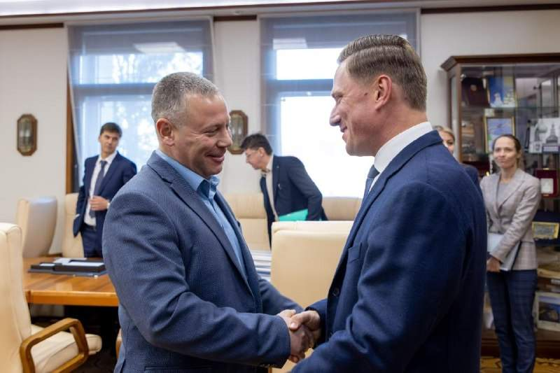
Ярославская область подключила новые каналы привлечения туристов и инвестиций, партнёром стал медиахолдинг МАЕР. Кампания о туристическом потенциале Ярославля уже идёт на медиафасадах Москвы, вскоре её расширят на всю сеть холдинга и будут продвигать другие города области как направления выходного дня. Высадку Аллеи народов России ко Дню народного единства в Ярославле также вывели в федеральную повестку и показали на медиафасадах Москвы и других городов. @bankrollo
Студентов в России будут выпускать из вузов вместе с ИИ-клонами уже в 2028 году, заявил профессор ВШЭ Сергей Зверев. При поступлении студент создаст себе цифрового двойника, который будет учиться вместе с ним все годы обучения. Человек научит нейросеть решать задачи, исправлять ошибки и работать в своём стиле, а после выпуска получит диплом и готового ИИ-агента. @bankrollo
Операционная прибыль (EBITDA) Почты России за 9 месяцев 2026 года составила 12 млрд рублей, выручка выросла на 5,2%, до 166 млрд рублей. В компании связывают результат с оптимизацией расходов, ростом производительности труда и услугами для бизнеса, включая игроков e-commerce. Выручка от грузоперевозок прибавила 54%, от фулфилмента и других складских логистических услуг — 90%. Электронные и гибридные письма принесли 26,5 млрд рублей, более 62% писем оформляются и оплачиваются онлайн. Приложением и кабинетом Почта бизнес ежемесячно пользуются 12,5 млн человек, клиентов из малого и среднего бизнеса прибавилось 30 тысяч — на 21% больше, чем годом ранее. @bankrollo
Эстония начала строить 150 бункеров на границе с Россией. Они станут частью «Балтийского оборонительного пояса», который создают совместно Эстония, Латвия и Литва. Всего Эстония планирует оборудовать до 600 бункеров. @bankrollo
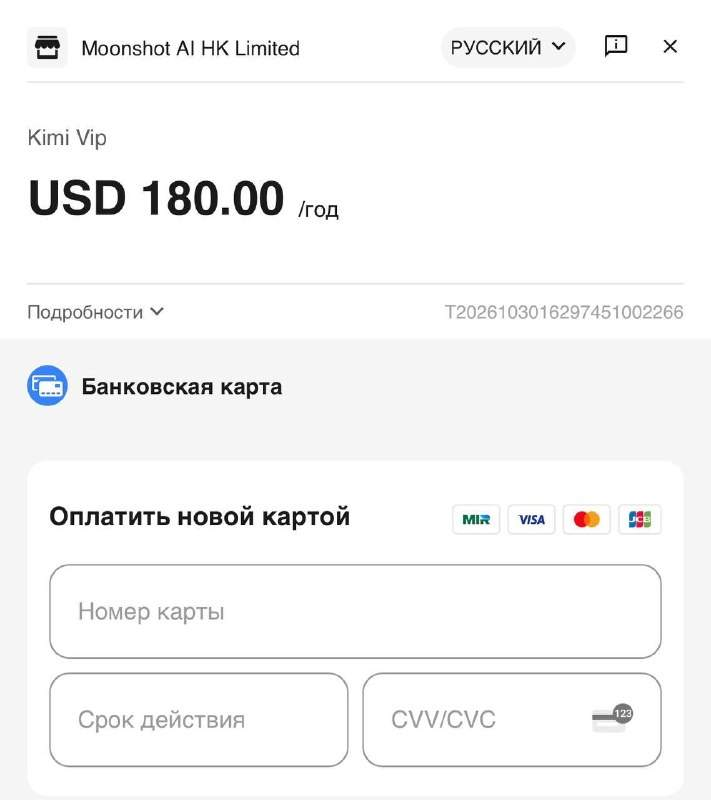
Популярная китайская нейросеть Kimi открыла оплату картами Мир. По мощности Kimi K3 не уступает Claude и ChatGPT. @bankrollo
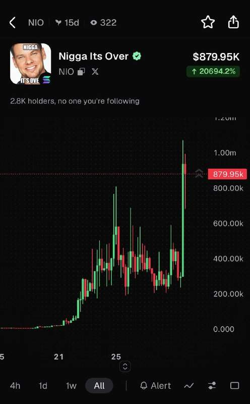
Токен Nigga Its Over подорожал в 5 раз со взлома Binance. @bankrollo
Оценивать девелоперов только по выручке рискованно: за распределением мест скрывается разная экономика бизнеса, считают эксперты рынка. По данным Метриума, в III квартале Донстрой выручил 28,3 млрд рублей на 492 ДДУ, почти как ПИК (29 млрд рублей и 1539 ДДУ). Но средний чек у Донстроя — 57,5 млн рублей против 18,8 млн у ПИКа. Масс-маркет сильно зависит от доступности ипотеки, а меньшее число сделок при сопоставимой выручке говорит о более эффективной модели: маржинальность каждой квартиры выше, а бизнес менее чувствителен к колебаниям ставок, отмечают эксперты. @bankrollo
Парковка в Москве подорожает до 950 рублей в час с 17 декабря— Дептранс. Цены будут формироваться динамически в пределах ТТК и МКАД. @bankrollo
В России начали строить многоэтажки без подключения к канализации. 16-этажные дома возводят с септиком, чтобы не платить Водоканалу и использовать субсидии, заявил депутат Якутии. Субсидии на вывоз жидких отходов уже достигли 1,5 млрд рублей. @bankrollo
Трамп дал совет молодёжи: «Никаких наркотиков. Никакого алкоголя. Никаких сигарет... И, если честно, поменьше татуировок». @bankrollo
Американский рынок превратился в рынок мемкоинов. За сегодня рухнули: — Intel −31% — Reddit −30% — Roblox −20% — Illumina −19% — SanDisk −15% — Arm −12,7% — Dell −12,5% @bankrollo
Госдеп США одобрил продажу Украине 500 ракет Patriot на $2,1 миллиарда. Ракеты оплатит Европа. @bankrollo
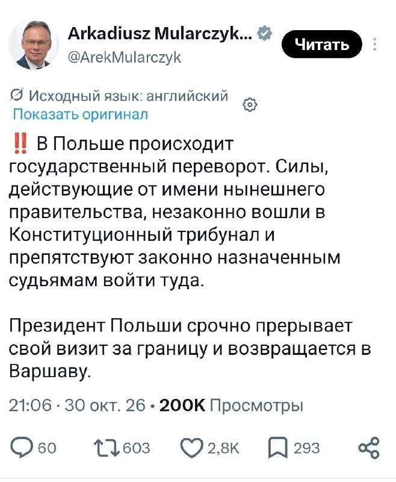
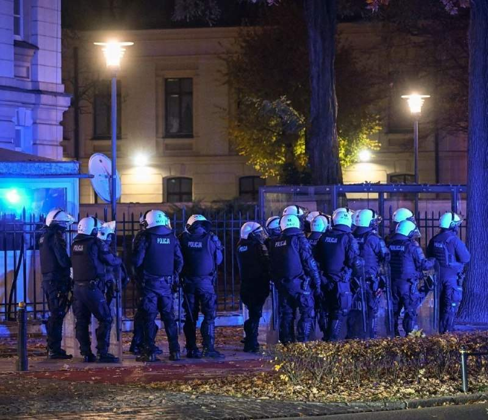
Госпереворот начался в Польше, пишут местные СМИ и депутаты. Правительство Дональда Туска воспользовалось отсутствием президента Республики Кароля Навроцкого, чтобы захватить Конституционный трибунал, который сопротивлялся решениям Брюсселя. Президент Польши срочно возвращается в страну, прервав свою зарубежную поездку. @bankrollo